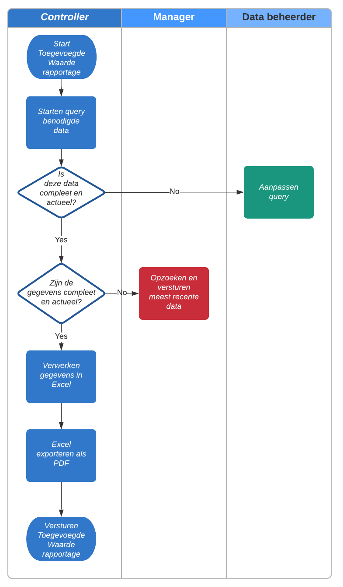

Smart bedrijfsproces
In dit hoofdstuk hebben ik, Marc en Dirk een onderzoek gedaan naar wat er gebeurt met het proces door de implementatie van ons project.
Het bedrijfsproces vóór en ná de implementatie van ons Smart Industry project
Flynth is onderverdeeld in verschillende vestigingen die ieder eigen doelstellingen (begroting) heeft. Om deze vestigingen te sturen is er een globaal orgaan dat cijfers ophaalt en verwerkt van de betreffende afdelingen.
Voor ons opdracht zijn wij bezig geweest om voor dit globale orgaan een proces te automatiseren. In dit rapport is te lezen hoe het proces vóór de implementatie van ons project was, en welke stappen er geautomatiseerd zijn.
Het oude proces
Op de afbeelding is een swimlane te vinden hoe het oude proces was ingedeeld. Dit proces koste de controller veel tijd omdat hij/zij vaak moest wachten op documenten of reacties van anderen. Ook moest zij handmatig aanpassingen maken aan het geautomatiseerde proces wanneer iets niet correct was. Stap voor stap ging er vaak veel tijd verloren.
Starten en controleren query benodigde dataOm de rapportage te maken moest data uit het systeem gehaald worden. Het ophalen van deze data wordt gedaan aan de hand van het starten van een query (een vraag aan het systeem om de gegevens). Wanneer deze data incorrect was of hier duidelijk fouten zitten, wordt er aan een databeheerder gevraagd om de query’s aan te passen zodat de juiste gegevens van de juiste bestanden wordt opgevraagd.
Deze vraag wordt neergelegd bij de data beheerder, omdat alleen hij bevoegd is om deze aanpassingen te maken. Er zal in deze stap dus gewacht moeten worden tot de data beheerder deze verandering doorvoert.
Controleren gegevensWanneer de opgevraagde data correct is, kan het zijn dat de gegevens zelf niet kloppen. De controller zal voor de juistheid van de rapportage moeten controleren of er fouten zijn in de gegevens en indien iets niet juist is aangevuld, zal een verzoek naar de betreffende manager gestuurd worden. Ook hier zal er gewacht moeten worden op een antwoord van de benodigde persoon, in dit geval de manager. Dit proces herhaalt zich tot de gegevens juist en compleet zijn.
Verwerken gegevens in ExcelNu de gegevens compleet zijn, is het tijd voor de controller om de formules te actualiseren en te verwerken. De toegevoegde waarde rapportage is op een specifieke manier ingedeeld met het globale rapport bovenaan met een altijd zelfde terugkomende volgorde van filialen. De juiste filialen moeten de juiste formules hebben om de correctheid van de waarden te waarborgen.
Dit proces kost de controller veel tijd en komt iedere maand terug.
Excel exporteren als PDFNu formules goed staan en een juiste rapportage is gebouwd in Excel, moet het document geëxporteerd worden als PDF.
Versturen toegevoegde waarde rapportageHet document is afgerond en opgeslagen in PDF formaat, de controller verstuurd nu het PDF bestand naar de stakeholders. De stakeholders printen dit document vaak uit.
Conclusie van het oude procesHet is duidelijk dat er veel processtappen zijn die handmatig werk kosten waardoor er fouten kunnen ontstaan. Formules kunnen verkeerd worden ingevuld, managers kunnen verkeerde documenten versturen en er kunnen fouten over het hoofd gezien worden. Ook is de doorloopsnelheid van het proces laag omdat er vaak gewacht moet worden op andere mensen. Heel dit proces kost de controller veel tijd die vaak nodig is voor andere werkzaamheden. Omdat het hier om een terug komende handeling gaat is het aantrekkelijk om dit proces te automatiseren. Dat is precies waar wij voor kwamen.
Het nieuwe proces
Omdat veel gegevens digitaal aanwezig zijn, zagen wij de mogelijkheid om het nieuwe proces volledig te automatiseren. Met behulp van Power BI is het ons gelukt om het volledige toegevoegde waarde rapportage digitaal weer te geven. Hierdoor wordt er veel tijd bespaard aan het maken van de rapportage voor de controller.
Iedere dag haalt het systeem de juiste gegevens op uit de benodigde documenten. Deze gegevens worden ingeladen en ingelezen en het dashboard wordt hiermee automatisch aangevuld. Het is belangrijk dat managers de juiste data op de juiste plek opslaan, maar omdat het zelf de eindgebruikers zijn is er een betere incentive om dit te verrichten.
Buiten het volledig automatiseren van het proces, zitten er nog meer voordelen aan:
Geeft meer inzichtBuiten enkel de gegevens van het toegevoegde waarde rapportage, kan er ook ingezoomd worden op de achterliggende cijfers. Het rapportage geeft bijvoorbeeld het volgende:
Werkelijke productiviteit vestiging - Begrote productiviteit vestiging = Delta productiviteitMet de nieuwe rapportage is het mogelijk om niet alleen de productiviteit van de gehele vestiging te zien, maar ook per vestiging hoe productief iedere enkele medewerker is. Het is hierdoor mogelijk om veel beter te sturen op de gegeven data omdat deze vollediger is.
Ook kan er per jaar/kwartaal/maand/week/dag gekeken worden naar de gegevens waardoor een betere analyse mogelijk is.
Wordt beter gestuurd op de juistheid van gegevensHet kan voorkomen dat medewerkers gegevens verkeerd invoeren waardoor de productiviteit hoger dan 200%+ is. Omdat de controller deze gegevens niet altijd ziet, wordt deze data toch meegenomen in de dashboard waardoor de gegevens onbetrouwbaar zijn. Uitschieters als deze maakt het voor de manager onoverzichtelijk in zijn/haar eigen dashboard. Hierdoor ontstaat de kans dat managers niet meer akkoord gaan met dergelijke invoeringen in het systeem waardoor de cijfers op ten duur betrouwbaarder zijn.
